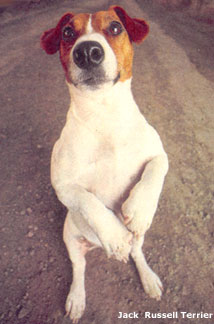
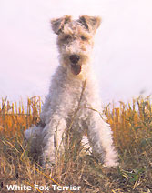
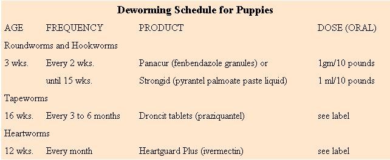

The Homestead Hound
by Jon Geller
August/September 2000
Part I: Raising a healthy
young dog.
As Rod Carpenter's 1976 Ford F-250 pickup rolled to a stop, I glanced up at his flatbed load of bay silhouetted against the agate-blue Colorado sky. Perched on top, guarding the cargo against ground or aerial attack, was Rex, a merle blue Australian shepherd.
Rod, a third generation backcountry rancher, was on his way to, feed his cows - a job he wouldn't even think of doing without Rex. Rod tugged the sweat-stained brim of his Stetson lower against the rising sun as we jawed about his herd. Rex kept his post on the bales, scanning the surrounding hills for potential ambusbers.
Choosing a Breed
Choose a dog that fits your home and needs. Should it be a purebred dog or a mixed breed? The debate continues. While purebred dogs may provide more predictability in behavior, mixed dogs often combine the best characteristics of several breeds. Then again, mixed-breed dogs may acquire the worst characteristics of their heritage.
Consider the case of Max, a five-year-old Rottweiler mix. His owner, a farmer from across the creek, called me in to euthanize the dog after it killed all the chickens, terrorized the cats, chewed up the porch furniture and chased the cows through the fence, all within the first week of being adopted from a local shelter.
If you want help working cattle or sheep, get a herding dog such as a Border collie, Australian shepherd or Australian cattle dog. If you need a dog to watch over the sheep, consider a Newfoundland or Great Pyrenees. Other working breeds such as Bernese mountain dogs, Rottweilers or malamutes may also be good choices.
Great all-around breeds for farm families include German shepherds, collies, Labrador retrievers, English sheepdogs, and other spaniels and terriers. All of these breeds are, however, prone to certain diseases such as hip dysplasia, heart disease or skin allergies, so do your homework.
The best way to evaluate a prospective dog is to look at the animal's lineage. If Mom or Pop Hound lives in a yard pitted with huge craters or. barks hysterically all day, just remember the nut doesn't fall far from the tree.
You'll want to avoid pups from psycho dogs like the high-strung Blue Heeler I vaccinated for rabies last week. "Grizzly" came tearing out the front door of the house, pulling the owner in a heel skid across the yard. After lunging at my groin several times and attacking his own leash, he allowed us to wrestle him down for the shot. Turns out the dog jumps on the family's treadmill in the basement every day, barks until it's turned on, then runs off steam for 30 minutes or more.
Wired purebreds like Grizzly make the best argument for mixed-breed pups. A good pup should be neither excessively friendly and rambunctious,. nor overly shy and withdrawn. Make an educated guess about the breeding history and go from there.
Health Care for Your Young Dog
Many rural dwellers doctor their own critters, and there's no reason that shouldn't include your pup, at least when it comes to maintenance and prevention. If your dog gets sick, however, call the vet.
Deworming
All puppies have intestinal worms and should be dewormed aggressively starting at about three weeks of age. Puppies will continuously shed roundworm and hookworm larvae in their feces, and then enthusiastically reinfect themselves by digging or playing on the same ground where they defecate. Roundworms and hookworms can be effectively controlled with a quality dewormer, given every two weeks until the dog is about four months old (see " Deworming Schedule for Puppies ").
Tapeworms are a different class of parasite, commonly found in the stool of rural dogs who eat mice and birds.
Where exposure is high, deworming every three to six months may be necessary throughout a dog's life.
Dogs that dine regularly on manure - a distasteful but unavoidable fact of farm lifeshould be treated for roundworm, hookworm and tapeworm as often as every three months.
Vaccinations
Puppies should be vaccinated at six, nine and 12 weeks of age with a combination Parvo/Distemper/Adenovirus2/Parainfluenza shot (see " Vaccination Schedule for Puppies "). Some breeds that are more susceptible to Parvovirus, such as Rottweilers and Doberman pinschers, should get boosters every two weeks, from six to 16 weeks of age. All dogs require an annual combination booster from the first year on.*
Rabies vaccines are required by law. Most dogs should get their initial rabies shot between 14 and 24 weeks of age. Keep in mind that to obtain a legal rabies certificate, a veterinarian must give the vaccine. A booster will be required at one year of age; after that, vaccination requirements vary by county.
Vaccinations are also available for diseases such as leptospirosis and Lyme disease and are generally recommended in areas where cases are prevalent. A new vaccine to ward off Giardia, a parasite found in outdoor water sources that causes vomiting and diarrhea, shows promise.
Most vaccines may be purchased and administered by pet owners; just be sure to check expiration dates, label instructions, and correct storage and administration guidelines (see " How to Vaccinate a Puppy ").
*Unfortunately, Parvovirus can strike even with proper vaccinations. And though Rottweilers and Dobermans are most at risk, any dog can be affected. Maternal antibodies acquired by nursing puppies can interfere with early vaccinations, then wear off, leaving the dog susceptible. The first signs are vomiting and diarrhea, which progress to weakness, collapse and dehydration. White blood cell counts drop precipitously. Aggressive intravenous fluids and antibiotics are needed to treat Parvovirus infection - a job for your veterinarian.
How to Vaccinate a Puppy
1. Verify that the vaccines have not expired and have been refrigerated continuously.
2. Using a 3-ml. syringe and 20- or 22-gauge needle, mix the diluent into the powder portion of the vaccine.
3. Replace the needle with a new 23- or 25-gauge needle (the original needle will be dulled from going through the rubber cap).
4. Without using any alcohol, tent up some loose skin on the back of the puppy's neck and gently poke the needle through the skin into the tented space. This reduces the initial needle prick somewhat.
5. Pull back briefly to ensure the needle is not in a blood vessel, then inject the vaccine with steady pressure. The vaccine should flow freely; if it does not, the needle may be in the muscle and should be pulled back slightly. Ensure that the needle has not passed through the opposing layer of skin, in which case the vaccine will be deposited on the puppy's fur (where it is less than effective).
6. Discard the used needle into a rigid plastic jug designated as a "sharps container."
External Parasites
Fleas and ticks can wreak havoc on the immature immune systems of puppies. Fortunately, some miraculous new prod ucts have made management of these nasty pests simple. There are once-a-month ointments that, when applied between a dog's shoulder blades, will kill all ticks and fleas within 24 hours as the treatment spreads across the puppy's coat (ref., Advantage by Bayer). There are oral medications that will do the same, plus protect against heartworms and roundworms (ref., Sentinel by Novartis). Check the specific labels of these products to determine at what age they can be given safely to your puppy.
A Note About Doctoring Your Own Dog
Many of the products available for deworming and parasite control require a prescription. Food and Drug Administration regulations mandate that all prescription drugs for animals be sold solely by veterinarians who have a valid relationship with their patient and client.
Nevertheless, these prescription products will occasionally be sold online or at feed stores, where there may be a vet on staff to make it "legal." Keep in mind, however, that though you may be perfectly capable of administering these products yourself, involving your vet in routine preventive care has its upsides.
First, your vet can be an informative consultant, answering any questions you might have about husbandry, nutrition or disease. Second, by establishing a good working relationship with a veterinarian, you'll be ensuring coverage for those middle-of-the-night dystocias (difficult births) and wire cuts that won't stop bleeding.
Neutering
Have your dog spayed (given an ovarohysterectomy) or neutered (castrated) between 16 and 24 weeks of age. This again is definitely a job for your veterinarian and not one that should be performed on a surgery table made out of hay bales. Take your dog to a veterinary hospital so the procedure can be performed in sterile surroundings.
Multiple studies have shown no adverse effects to early neutering, and the benefits are numerous. Neutered males show less testosterone-driven behavior, such as roaming and aggression. Spayed females are protected against mammary cancer and other future medical problems, such as uterine infections.
Neutered males and females may have a tendency to put on extra weight, but this can be controlled with regular exercise and measured feedings.
Nutrition
Puppies should be fed a high-quality, puppy-labeled dry food until six months of age. Vitamin and mineral supplements should generally be avoided with a high-quality diet. Overfeeding of calcium and some vitamins has been shown to cause growth deformities in some large-breed dogs.
Most name-brand manufacturers produce a quality diet for puppies. Avoid generic or discount brands and canned food. Feed a measured amount, based on manufacturer's guidelines, three or four times a day.
Avoid feeding table scraps or you will have a lifetime beggar. Use dog treats in moderation and offer chew bones, cow hooves or pig ears (available at your pet supply store) to keep puppies' mouths occupied and teeth healthy.
Training
Dogs are generally intelligent creatures and in many cases a minimal amount of training is required. If your puppy lives outside, housebreaking is not an issue.
To housebreak an inside dog, crate him at night, feed and walk him on a regular schedule, and reward generously when your dog defecates or urinates outside. In general, punishment is ineffective when not given at the time of the offense.
At about 16 weeks of age, start working with your dog on basic commands such as "come," "sit" and "stay." By six months, most dogs are ready for obedience training and early training to work livestock or retrieve. If you already have a working dog, you have a teacher-in-residence and a much easier job at hand.
Puppy Trouble
Puppies are notorious for ingesting anything within reach. Among the items that I have seen removed from, or miraculously pass through, a puppy's digestive tract are a tennis ball, Christmas ornaments, socks, towels, collars with buckles, plastic lunch boxes, Barbie doll parts and many other kids' toys. Pennies are especially toxic because of their zinc content.
Keep your puppy's outside play and exercise areas clean. Potential health hazards include rocks, sticks, mushrooms, compost, toxic plants, dead animals, antifreeze, lead paint on buildings, and rat poison.
Coyotes and mountain lions will make a quick meal of a small dog. Owls, hawks and eagles have also been known to swoop them up. If a puppy initially survives a predator attack, there is still a high risk of septicemia, a fatal and overwhelming bacterial infection.
Rod Carpenter glanced at his watch and put his truck in gear As he pulled away, he mentioned he would soon have a litter of Aussie pups available, sired by Rex. I watched his truck wind down the lane, his faithful hound moving adeptly over the bales, patrolling all sides. Why not? I thought. It occurred to me that such a pup might make darn good company. After all, who else could put up with me all day?
Watch for "The Homestead Hound. Part II" a look at behavior problems, nutrition and animal first aid, in the next issue.
Vaccination Schedule for Puppies
Basic vaccine for all puppies: Distemper/Adenovirus 2/Parainfluenza virus/Parvovirus (This combination shot is available from many manufacturers)
AGE FREQUENCYDOSE ROUTE
9 wksEvery 3 wks. until 15 wks., then annually 1 ml.Subcutaneous
Rabies vaccine: First vaccine at 16 weeks, booster at one year, then according to local regulations (every one to three years). Given subcutaneously or intramuscularly.
Bordetella vaccine or kennel cough vaccine: This is needed for puppies and dogs boarded in kennels or for large groups of dogs housed together. It is available as an annual injectable vaccine or as an intranasal vaccine given every three to six months.
Optional vaccines (consult with your veterinarian to determine the suitability of vaccinating your puppy for the following:
Corona Virus An intestinal virus that causes mild diarrhea.
Leptospirosis A bacterial infection that primarily affects the urinary tract, fairly common in certain areas of the country.
Lyme disease: A tick-borne, regionalized infection caused by a protozoan parasite.
Giardia infection. An infection, characterized by vomiting and diarrhea, that is caused by a protozoa frequently found in water supplies used by livestock or wildlife.
|
 |
|
 |
|
 |
 |
|